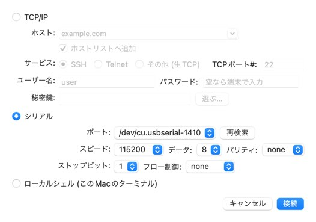

シリアル機器につなぐ
ルーターやスイッチ、マイコンボードなどのコンソールにつなぐ手順です。Mac には RS-232C の端子がないので、USB シリアル変換ケーブルを使います。
準備
- USB シリアル変換ケーブルを Mac に差します。
- ケーブルによっては、メーカーのドライバーを入れる必要があります (説明書を見てください)。
- ケーブルのもう一方を機器のコンソール端子につなぎます。
つなぐ手順
- ⌘N を押します (メニューの [ファイル] > [新しい接続...])。
- 「シリアル」を選びます。
- 「ポート」で、ケーブルのポートを選びます。USB シリアルは「/dev/cu.usbserial-…」や「/dev/cu.usbmodem…」のような名前です。
- 「スピード」を機器に合わせます。よく使われるのは 9600 か 115200 です (機器の説明書を見てください)。
- データ・パリティ・ストップビット・フロー制御は、ふつうは 8・none・1・none のままでかまいません。
- 「接続」を押します。
- 画面に何も出ないときは、return を 1 回押してみてください。

シリアルを選び、ポートとスピード (115200) を選んだところ。ポートの名前は例です
ポートが「(シリアルポートが見つかりません)」となるときは、ケーブルを差し直してから「再検索」を押してください。それでも出ないときは、ドライバーが入っているか確かめてください。
あとから速さを変える
つないだあとでスピードなどを変えるときは、[設定] > [シリアルポート...] を選びます。
くわしくは
かんたんマニュアルの目次へ | 次: 画面の基本